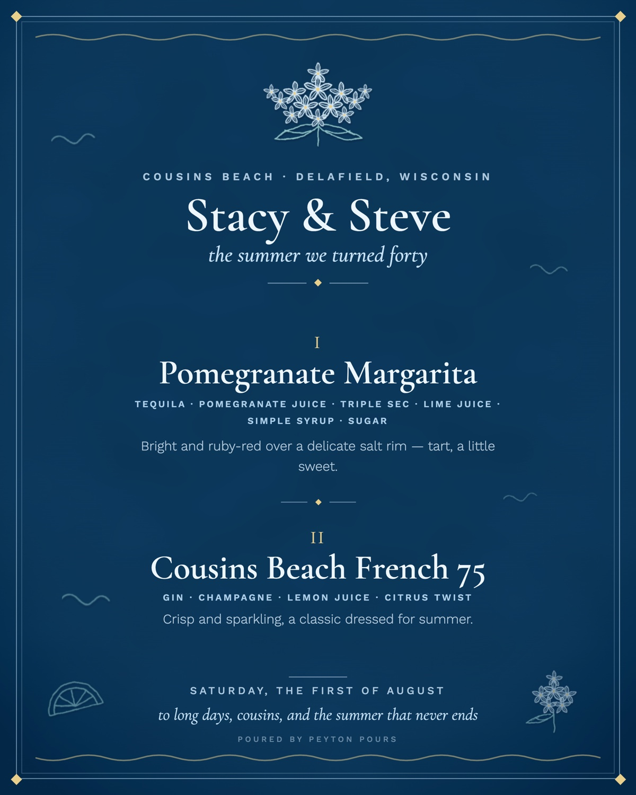
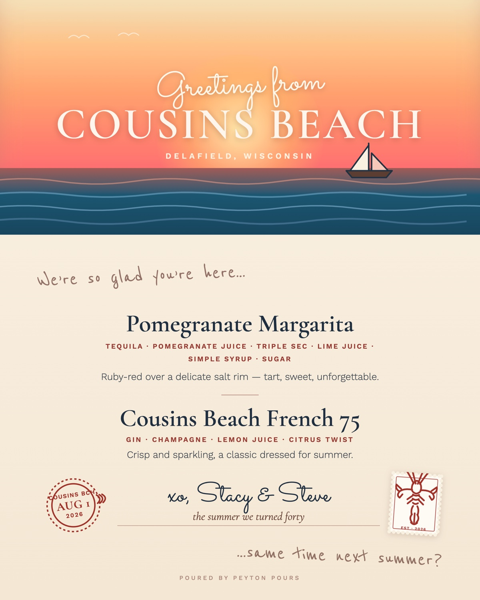
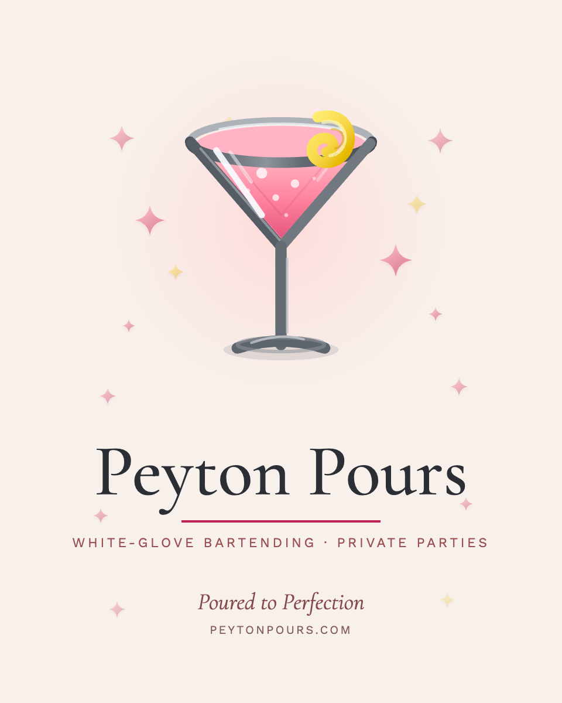

Same two cocktails. Same date. Two unrelated visual worlds — plus a third in the house pink below. Range is the point.
Graphic Design · Lake Country, Wisconsin
Brand identity, custom bar menus and event signage for weddings and private parties — made by someone who has actually worked your bar.
Selected work


Same two cocktails. Same date. Two unrelated visual worlds — plus a third in the house pink below. Range is the point.


Business cards, light and dark — built to 3.75 × 2.25″ for a 3.5 × 2″ trim with full bleed.

Approach
Most event stationery is designed by someone who has never stood behind the bar at nine o'clock at night. It shows.
A bar sign has to read from six feet away, in low light, by someone holding a drink in one hand. That constraint drives the type size before anything pretty happens.
You see real directions, not one comp and a hard sell. Choosing between finished worlds beats describing a feeling you can't quite name.
Correct bleed, safe margins, real resolution, and a written spec for the printer. No surprises at the counter the week of the event.
Services
The pieces your guests actually hold and read.
A whole system, not just a logo file.
Getting it made without the drama.
Most event packages land between a single menu and a full day-of suite. Tell me the event and I'll quote the whole thing up front — no hourly surprises.
Contact
Wedding, milestone birthday, or a party that deserves better than a chalkboard. Send the date and what you're picturing — I'll come back with directions.
peytonpours@gmail.com